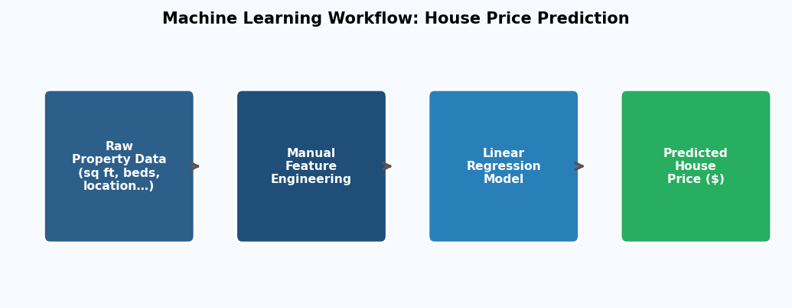
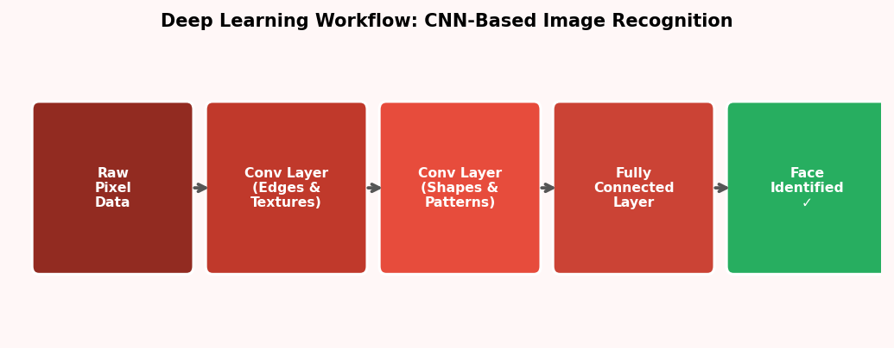

Indiana Wesleyan University · AIML-500 · Machine Learning Fundamentals
Machine Learning
vs Deep Learning
Arvinnd Chowdary Kuchipudi — 2938416
Prof. Marvin Hunt
March 9, 2026
1. Introduction
Machine learning (ML) and deep learning (DL) are both sub-fields of artificial intelligence, yet they differ fundamentally in architecture and application. ML algorithms rely on human-defined features and work well with structured, tabular data. DL uses multi-layered neural networks that automatically discover features from raw, high-dimensional inputs such as images or text. This report compares two real-world examples — House Price Prediction (ML) and Image Recognition (DL) — and evaluates why each approach suits its respective problem.
2. Key Differences
| Dimension | Machine Learning | Deep Learning |
|---|
| Feature Extraction | Manual — by domain experts | Automatic — learned from data |
| Data Needs | Small-to-medium datasets | Large labelled datasets |
| Best For | Structured / tabular data | Images, audio, text (unstructured) |

Figure 1: Comparative attribute scores for Machine Learning vs. Deep Learning.
3. Machine Learning: House Price Prediction
3.1 Real-World Application — Zillow’s Zestimate
Zillow’s Zestimate is a widely used automated home-valuation tool that employs Linear Regression to predict property prices from structured inputs such as square footage, number of bedrooms, neighbourhood school ratings, and recent comparable sales. The model is trained on millions of property records and delivers transparent, near-instant valuations to buyers, sellers, and agents.

Figure 2: Workflow of a Machine Learning model for house price prediction.
3.2 Why ML Is the Right Choice
Structured inputs: Property data is tabular and numeric — exactly the format ML algorithms consume directly, with no hidden spatial or temporal structure to uncover.
Interpretability: Regression coefficients reveal how each feature influences price, meeting regulatory transparency requirements in finance and real estate.
Efficiency: Training converges in seconds on standard hardware, allowing the model to be retrained frequently as market conditions shift.
3.3 Why Deep Learning Would Be Unsuitable
A deep neural network would find no additional signal in tabular property data. It would demand far more labelled examples, consume greater computational resources, produce uninterpretable ‘black-box’ outputs, and likely overfit without delivering measurably better accuracy than a well-tuned regression model.
4. Deep Learning: Image Recognition
4.1 Real-World Application — Google Photos Face Grouping
Google Photos uses a Convolutional Neural Network (CNN) to automatically detect and cluster faces across a user’s entire photo library. The CNN processes raw pixel arrays, progressively learning edges and textures in early layers, then shapes and facial contours in deeper layers, and finally identity-level embeddings in the fully connected layers — all without any manually engineered features.

Figure 3: CNN pipeline for deep-learning-based image/face recognition.
4.2 Why DL Is the Right Choice
Automatic feature discovery: There is no known set of hand-crafted rules that can reliably capture the infinite variation in human faces across lighting, angle, and age — CNNs learn these representations end-to-end.
High-dimensional data: A single photo contains hundreds of thousands of pixel values. Convolutional weight-sharing handles this scale efficiently where flat ML models cannot.
Superior accuracy: State-of-the-art CNNs exceed human-level performance on facial recognition benchmarks, an accuracy level unachievable with traditional ML on raw pixels.
4.3 Why ML Would Be Unsuitable
Traditional ML algorithms require meaningful features as input. Feeding raw pixels into a logistic regression or SVM produces near-random results because these models lack the architectural capacity to detect spatial hierarchies. Hand-crafted image descriptors exist (e.g., HOG, SIFT) but fall far short of CNN accuracy in unconstrained real-world settings.
5. Conclusion
This report demonstrates that the selection between machine learning and deep learning must be guided by the nature of the problem. When input data is structured, features are interpretable, and transparency is required — as in house price prediction — traditional ML is the superior choice. When data is raw, high-dimensional, and unstructured — as in facial recognition — deep learning’s automatic feature extraction and hierarchical abstraction make it indispensable. Understanding this distinction is fundamental to effective AI practice.
6. References
- Brownlee, J. (2021, January 14). A gentle introduction to deep learning for face recognition. Machine Learning Mastery.
- Géron, A. (2022). Hands-on machine learning with Scikit-Learn, Keras, and TensorFlow (3rd ed.). O’Reilly Media.
- IBM. (2023, May 10). What is machine learning? IBM Think. https://www.ibm.com/topics/machine-learning
- LeCun, Y., Bengio, Y., & Hinton, G. (2015). Deep learning. Nature, 521(7553), 436–444.
- Zillow. (2024). What is a Zestimate? Zillow’s home value estimator. Zillow Help Center.